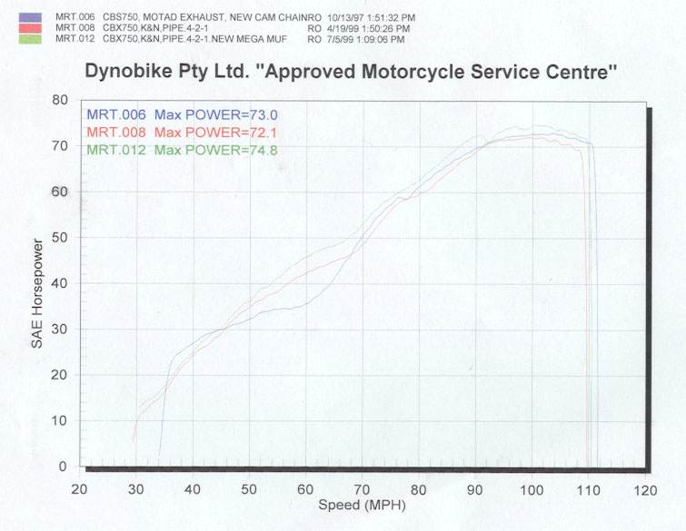
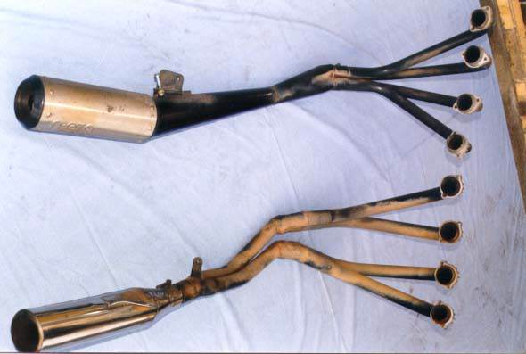
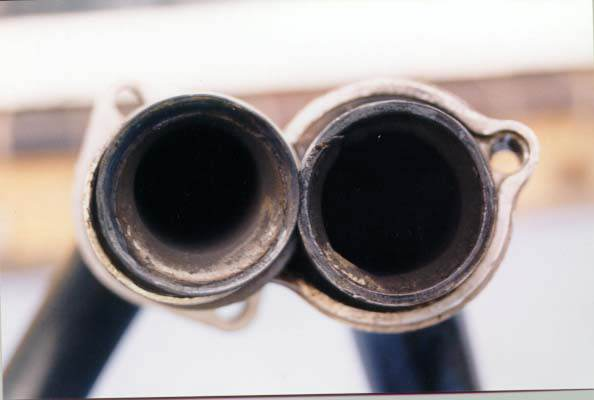
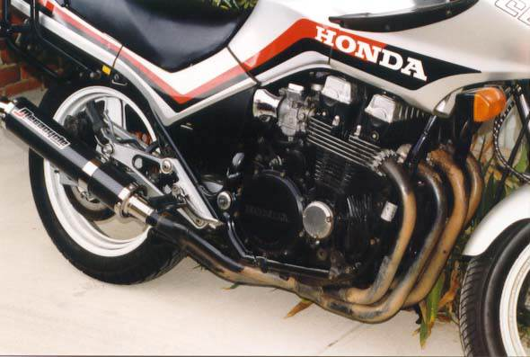
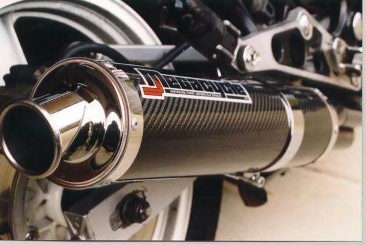

Why change?
I have used a Motad 4-1 exhaust system almost since I bought my bike.
The original Honda exhaust had been patched a few times, and a hard familiarisation run down the Great Ocean Road (here in Victoria, Australia) blew a few more holes in the old system.
It was then than I had the Motad fitted.
The Motad is made in England and is designed for stock noise level, which is unusual for a 4-1 system.
The bike ran well, but there was a noticable flat spot in the midrange revs.
During my reading of a few books on engine design and modification, I thought I might be able to change the engine performance a bit with a change to the exhaust, mainly to try to fill the flat spot in the midrange. To give the bike a slightly sportier sound would be a bonus.
I found an interesting looking exhaust on a RC17 bike at a wrecker. It was a 4 into 2 into 1 (4-2-1) design of unknown make, so I’ll call it the “Brand-X”.
The Results
Installation of the 4-2-1 header system was fairly straightforward. I took the opportunity to replace the header flange gaskets at the same time. The old ones were very used.
When I originally tested the Brand-X 4-2-1 with the muffler that came with it, the dyno graph showed that the unit had potential. Notice how the 4-2-1 fills in the dip in the torque curve that the Motad shows from 4000 to 6000rpm. After about 6300rpm, the Motad and 4-2-1 are very similar.

Before I fitted the 4-2-1, I had also fitted a K&N air filter. Exactly how much extra power this may have contributed is unknown as I did not test it separately, but I doubt it was much.
The 4-2-1 made very much the same top-end power as the Motad but the noise difference was amazing. The 4-2-1 was much too loud for my liking, and considering the similar top end power, the midrange boost was not enough to make me keep it on the bike. Maybe I have been spoiled by the quiet stock noise level of the Motad.
I consulted a muffler maker that was recommended to me, Megacycle Engineering. Ken Onus is the boss there and has been making exhaust systems for many years.
We discussed my requirements. I wanted to use the 4-2-1 headers with one of his freeflowing mufflers, and still have a bike that was fairly quiet.
The mufflers he makes are of the classic “absorption” type: there is a straight pipe which is perforated and inside a can which is packed with fibreglass wool.
I wanted something that is not loud but freeflowing, requirements that are generally in conflict.
The muffler had to fit on the bike well, not hinder cornering clearance if possible and look good. Was I asking for too much yet?
I could have a muffler with a 50mm (~2 inch) internal diameter core pipe, but that might have been too loud for me. It is possible to fit a mechanical baffle at the end of a muffler with a 50mm core to quieten it down a bit, but then the gas flow might suffer, so whether a 38mm core without a baffle would flow any different to 50mm core with a baffle is debatable.
I left it to Ken to use his experience to decide the actual dimensions of the muffler.
He used a 38mm core pipe and no mechanical baffle. 38mm is the smallest core that Ken uses in any of his mufflers. It would not give the very best flow, but it would be a relativley quiet for a muffler of this type.
A 50mm core (with baffle) may have the same noise level on the street, but with the baffle removed it would perform better on the track. However, the use of a removable baffle could change the characteristics of the exhaust flow enough to change the jetting the carburettors would need.
By using the 38mm core only, the carburettor jetting would be a little easier to set for all conditions.
The carbon fibre finish on the muffler is just a layer of carbon fibre sheet on top of the aluminium alloy muffler body. The carbon cost $100 more and adds a lot the appearance but the carbon sheet doesn’t add anything to the performance. The stainless steel end caps were fabricated to suit the bike and to look and fit just right.
The Motad weighs 8.1kg. The Brand-X was 7.4kg when I first purchased it. However, with the Megacycle muffler, the Brand-X might weigh just a bit more. Either system weighs much less than the Honda factory exhaust system.
Once the 4-2-1/Megacycle exhaust was fitted, it didn’t take me long to get it dyno tested.
The exhaust certainly sounded good, and not as loud as I expected it to be, so that was a bonus.
One glance at the dyno computer screen and I could tell the power and torque were much better. (See the graph further back up the page.)
The low-restriction muffler helped to fill in the midrange even more. From 4000 to 6000rpm, the 4-2-1/Megacycle torque curve shape is almost completely opposite to the Motad curve, and the biggest gain is at about 5500rpm with around 10hp extra.
This is a very useful gain in the real world, as the extra efficiency from 4500 to 5000rpm coincides closely with Australian open road speed limits, and could reduce fuel consumption on highway cruise because of increased engine efficiency in that rev range.
The extra torque at those revs could also improve overtaking power or reduce the need to change back to lowers gears.
At a bit over 6000rpm, there is a dip in the torque with the 4-2-1, with either of the mufflers. This would be a function of the way the headers interact with the engine, and I suspect that it would be close to what you could expect from the stock mufflers. To the credit of the 4-2-1, the dip is less noticable than the one produced by the Motad.
If you look at the 4-2-1/Megacycle power curve, it is fairly straight. This is a good thing as it suggests there was a lot of thought put into its design. However, you can see that the curve gets uneven at the top of the graph. The torque drops off suddenly at a bit over 8000rpm.
I suspect this is a jetting problem and I’ll try to fix this with a “Dynojet” brand jet kit that I have bought (Dynojet kit number 1155.001).
Just estimating, a jetting correction may gain at least 4 more horsepower, and may well move the peak power revs back up to the stock (and Motad) figure of 9500rpm.
One side benefit of this style of muffler (and maybe aided by the carbon fibre cover) is that the outside of the muffler doesn’t get hot like the Motad does because the Motad works like a normal car muffler.
The Megacycle muffler does get warm, but after a ride around town I can touch the muffler body with my hand without danger of burning.
A Bit of Tech
Typical 4-1 exhaust systems (like the Motad system) work on the principle of “independance”, and often concentrate the best engine performance in a few thousand rpm at the top of the rev range, and often leave a “flat spot” in the mid range where the torque drops.
By “independance”, each exhaust header pipe resonates by itself with the gas pressure pulses from the exhaust port it is connected to.
4-2-1 headers work on “interference”. The header pipes are connected so that pressure pulses from one exhaust port can act on the pipe and port of another cylinder.
Note that the Brand-X first connects cylinders 1-2 and 3-4 together. This is similar to the way that Honda designed the stock exhaust system.
I talked with Ken about modifying either of my exhausts to make a “crossover” 4 into 2 system (where I would have a muffler on each side of the bike. By “crossover”, I mean that cylinders 1 and 4 are connected, as are 2 and 3. Such a system could give even more midrange torque but for my bike would have be completely fabricated and thus would have cost too much.
The name “crossover” came from early designs in the 1970’s and 80’s where the exhaust header pipes from cylinders 2 and 3 were seen to cross over each other at the front of the engine.
A crossover system makes better use of the usual 4-cylinder firing order, 1-3-4-2. (Another way to think of that firing order is 2-1-3-4, or 3-4-2-1, or left cylinder inner / left cylinder outer / right cylinder inner / right cylinder outer)
Honda used the normal 4-2 style because it is cheaper to make and easier to fit onto the bike.
Many modern performance exhaust systems use a similar layout to my Brand-X, and some also use the “crossover” style, but the pipes “cross over” under the engine where you can’t see.
For a very complete discussion on general exhaust system design, see “The Scientific Design of Exhaust and Intake Systems” by Smith and Morrison, ISBN 0-8376-0309-9. Much of the research in this book dates back to the 1960’s, but the laws of physics do not change. Do not try to read all of this book in one night!

Two exhuast systems side-by-side
Motad in on the left, Brand-X 4-2-1 on the right. See the difference in the way the exhaust header pipe junctions are arranged on the Brand-X 4-2-1.
On the Motad, the 4 separate engine pipes slide into the collector in a square pattern. The collector is welded to the tapering pipe to the muffler, which is welded to the muffler body.
As well, to remove the oil filter when the Motad is fitted, I had to remove number 3 header pipe. An easy job but a little inconvenient. With the Brand-X fitted, there is enough room between 2 and 3 for the filter to come straight off. Another example of its good design.
Note the length of the Brand-X secondary pipes. They continue all the way to the muffler. Many current design 4-2-1 systems have shorter secondary pipe lengths. Finding just the right length for primary and secondary pipes, as well as the ideal internal area, is a time consuming task of engineering and testing.
I suspect the the two secondary pipes meeting near the muffler is also part of a clearance compromise, as it would be easier to route 2 smaller pipes around the frame and centrestand than one big pipe.
Whatever compromises were made, the 4-2-1 headers plus Megacycle muffler work well on the dyno.

Two exhuast headers side-by-side
This picture compares the inside diameters of the header pipes where they attach to the cylinder head. Motad on the left, Brand-X on the right. The inside of the Motad is about 28.5mm, the Brand-X is about 32mm. Often, a smaller pipe is better for torque and a bigger pipe is better for high speed flow.
A smaller pipe can make use of exhaust gas inertia at lower engine speed because the gas has to flow faster to get the same volume through the smaller pipe. A larger pipe can flow more gas overall, but the size of the pipe is only one factor among very many in exhaust system design.

The new system on the bike
The exhaust system as fitted to the bike with the bellypan off. Note how the two secondary pipes (below the clutch cover) are arranged. Here, the 2 smaller pipes are easier to route around the centrestand and still give useful ground clearance and cornering clearance, compared to 1 large pipe. The bellypan needed only a little grinding in 2 places to fit around #1 and #4 header pipes.

The new muffler (closeup)
A closeup of the custom muffler. Looks good, sounds good, works good.